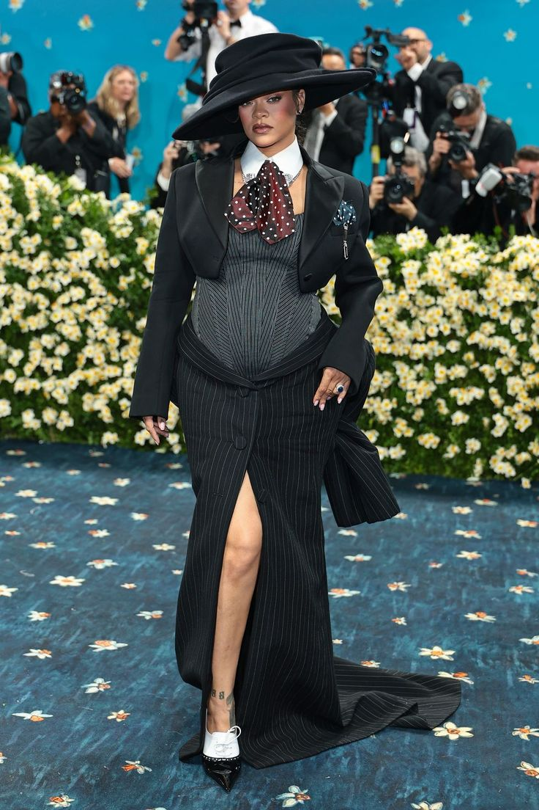

Image as Authority


Zendaya's structured silhouette transforms fashion into narrative alignment. The architectural waist and disciplined posture convert styling into a form of visual command.
Rihanna’s tailored silhouette transforms the red carpet into a site of deliberate visual command. The exaggerated hat obscures partial facial access, creating controlled distance between subject and spectator. Structured tailoring and elongated vertical lines convert fashion into architecture. Movement is restricted; the garment dictates posture. Authority emerges not from volume or exposure, but from containment. The look resists softness, replacing it with compositional discipline.
In the leather ensemble, authority is articulated through boundary. The high collar constructs physical enclosure, while dark lenses eliminate reciprocal gaze. The silhouette expands at the shoulders, compresses at the waist, and removes ornamental distraction. Gesture is minimal. Expression is unreadable. Authority here is not ceremonial — it is defensive. Control is asserted through opacity rather than invitation.